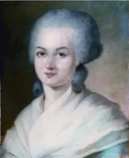
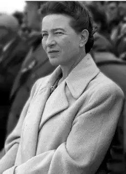
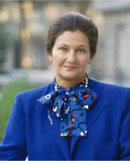
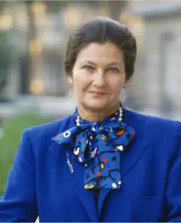
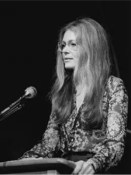
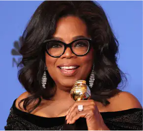
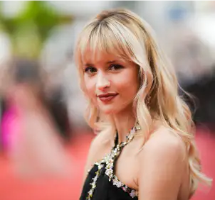
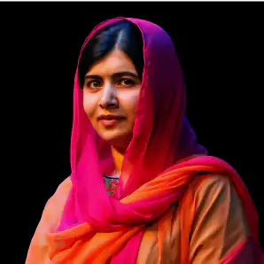

Galerie
On va s’intéresser ici à plusieurs grandes figures féminines qui ont marqué l’histoire du féminisme et qui l'influencent parfois encore aujourd’hui. Elles ne sont bien sûr pas toutes présentes mais cette galerie permet néanmoins d’en apercevoir quelques-unes.

Olympes de Gouges
Olympes de Gouges est née le 7 mai 1948 à Montauban et est morte le 3 novembre 1793. C’était une femme de lettre et une femme politique. Elle est considérée comme une pionnière du féminisme en France. Elle a écrit la Déclaration des droits de la femme et de la citoyenne. C’est une icône dans le combat de la défense des femmes.

Simone de Beauvoir
Simone de Beauvoir est née le 9 janvier 1908 à Paris et morte le 14 avril 1986. Auteure et philosophe, elle est considérée comme une des mères du féminisme, notamment grâce à son ouvrage Le Deuxième sexe.
 

Simone Veil
Simone Veil est une grande féministe surtout connue pour avoir proposé et mis en plus l’une des lois les plus importantes en France : la dépénalisation de l’accès à l’interruption volontaire de grossesse. Elle est née le 13 juillet 1927 et morte le 30 juin 2017. Survivante de la Shoah, elle y a perdu une partie de sa famille.
Gisèle Halimi
Il s’agit d’une avocate très investie dans la cause féministe. Elle a entre autre participé indirectement à la loi Veil, a manifesté pour l’accès à l'interruption volontaire de grossesse et a défendu les femmes violées aux yeux de la justice. Elle est née le 27 juillet 1927 en Tunisie et est morte le 28 juillet 2020 à Paris.

Gloria Steinem
Gloria Steinem est une grande militante de la deuxième vague du féminisme (1960-1970). Elle est née le 25 mars 1934 aux Etats Unis et est toujours active pour le mouvement. Elle est journaliste et écrivaine.

Oprah Winfrey
Oprah Winfrey est une actrice et grande animatrice de show télé. Née le 24 janvier 1964, c’est une grande féminisme. Elle a beaucoup évoqué et défendu les femmes dans son talk show The Oprah Winfrey Show, ce qui lui a value de nombreux prix.

Michelle Obama
Michelle Obama est une avocate investie dans les droits des femmes. Née le 17 janvier 1964, elle a diffusé l’idée d’accès à l’école pour les petites filles et d’autres valeurs féministes à travers ses discours.
Emma Watson
Emma Watson est une des plus grandes féministes actuellement. Elle a fait de nombreux discours et voyages pour promouvoir ses idées féministes dans le monde. Elle est née le 15 avril 1990 et est une grande actrice britannique.

Angèle
Angèle est une chanteuse belge née le 3 décembre 1995. C’est une des personnalités les plus engagées dans le féminisme en Europe et même dans le monde. Elle a fait plusieurs titres engagées dont Balance ton quoi qui met bien en avant la thématique du féminisme et la défense des femmes.

Malala Yousafzai
Malala is a pakistani born the 12 juillet 1997. She is very invested in the access to school for young girls. She has received a lot of prices like the price of peace in 2014 for her oppositions against the interdiction of education for girls and against the Taliban in Pakistan.